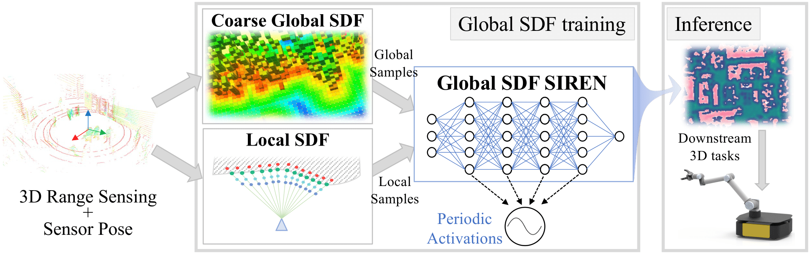

A good representation of a large, complex mobile robot workspace must be space-efficient yet capable of encoding relevant geometric details. When exploring unknown environments, it needs to be updatable incrementally in an online fashion. We introduce HIO-SDF, a new method that represents the environment as a Signed Distance Field (SDF).
State of the art representations of SDFs are based on either neural networks or voxel grids. Neural networks are capable of representing the SDF continuously. However, they are hard to update incrementally as neural networks tend to forget previously observed parts of the environment unless an extensive sensor history is stored for training. Voxel-based representations do not have this problem but they are not space-efficient especially in large environments with fine details.
HIO-SDF combines the advantages of these representations using a hierarchical approach which employs a coarse voxel grid that captures the observed parts of the environment together with high-resolution local information to train a neural network. HIO-SDF achieves a 46% lower mean global SDF error across all test scenes than a state of the art continuous representation, and a 30% lower error than a discrete representation at the same resolution as our coarse global SDF grid.
Method and System Architecture
Our method uses a mixture of approaches to extract data for the self-supervised training of the global SDF: a) a discrete model for coarse global SDF value look-up without replaying past data, and b) a sensor-based local SDF representation that captures more fine details around the collision boundaries.
The deep neural network representing the global SDF is constructed using periodic activation functions (SIREN), in order to enforce better accuracy and satisfaction of SDF-related constraints. Compared to alternative methods, the use of SIREN allows us to achieve superior performance with a very simple definition of the loss function.
Unlike prior work, our method offers more flexibility, as it works both with depth sensors and sparse point cloud inputs (e.g., from a 3D LiDAR sensor).

HIO-SDF is implemented in ROS and can be fully integrated within a robot system architecture that uses conventional sensors (a 3D LiDAR sensor or a depth camera) and a 3D localization algorithm.
Example of Online SDF Reconstruction
We demonstrate the evolution of the scene mesh reconstruction and slices of the 3D SDF at different heights, as a depth sensor explores an environment from the ReplicaCAD dataset. The locations of local SDF samples are shown with black dots at each sensor pose.
Results
BibTeX
@inproceedings{vasilopoulos_hiosdf_2024,
title = {{HIO-SDF: Hierarchical Incremental Online Signed Distance Fields}},
author = {Vasileios Vasilopoulos and Suveer Garg and Jinwook Huh and Bhoram Lee and Volkan Isler},
booktitle = {IEEE International Conference on Robotics and Automation},
year = {2024},
}